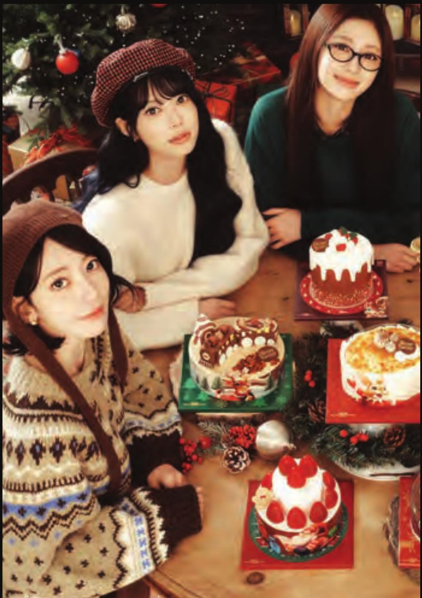
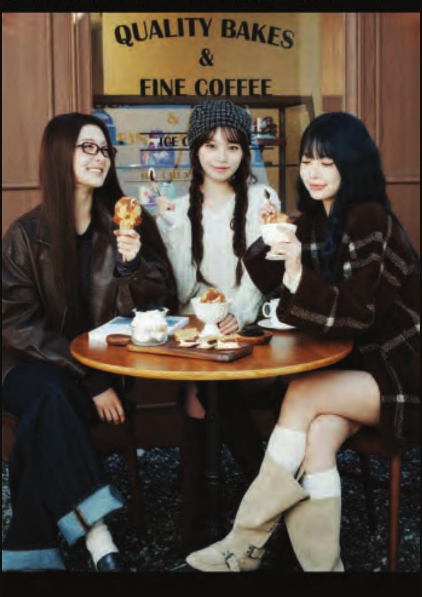
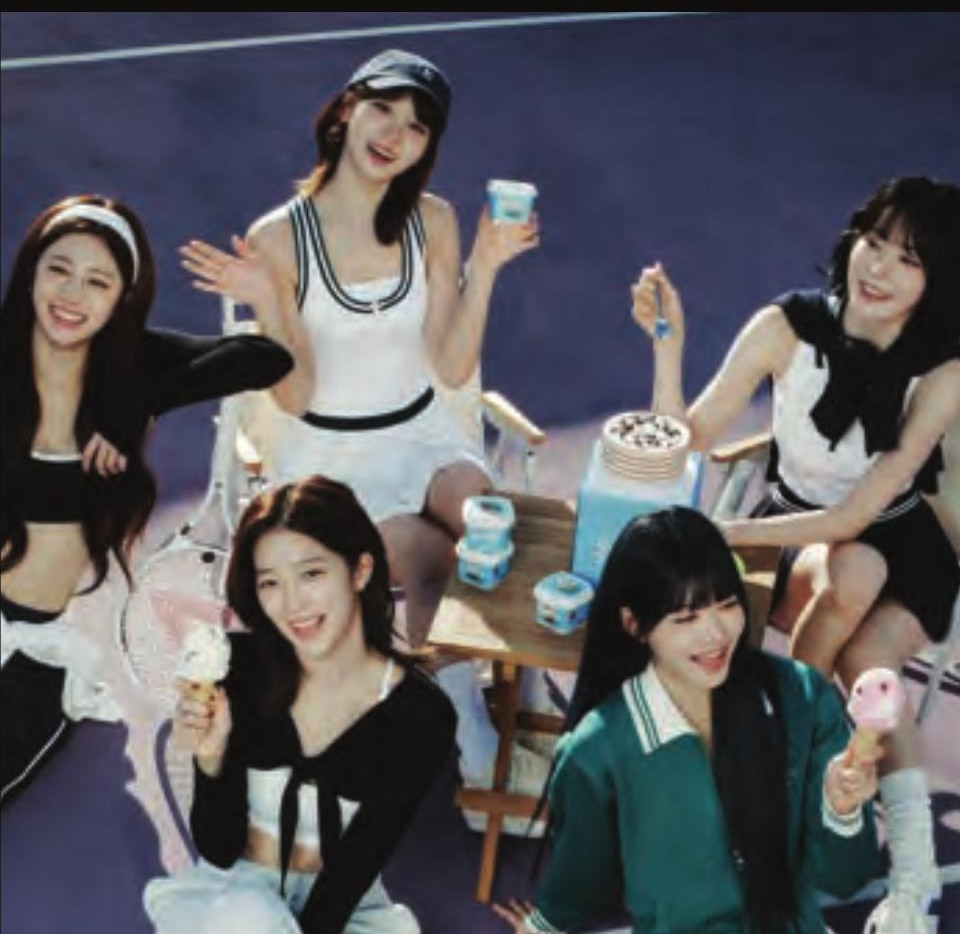
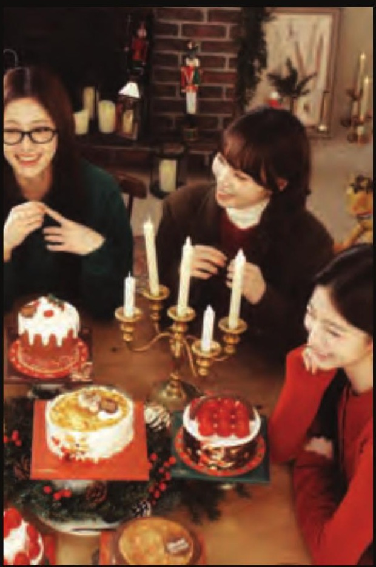
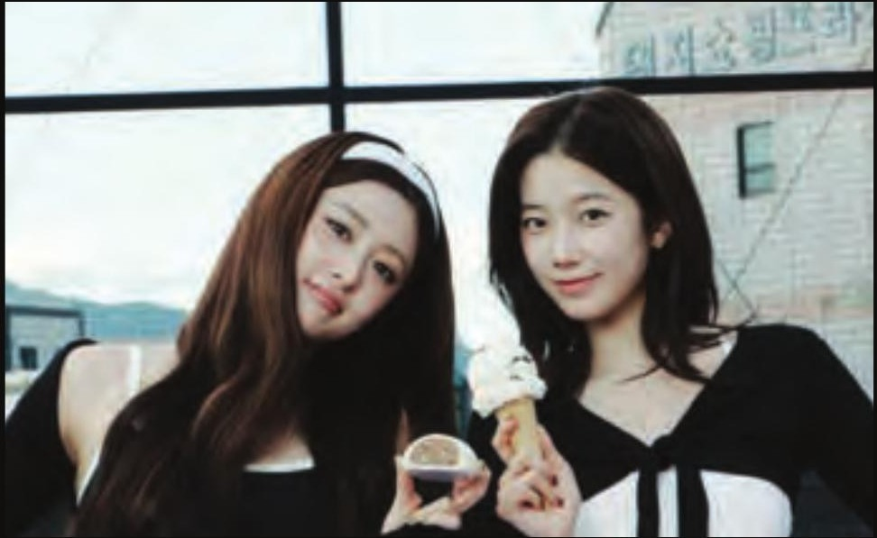
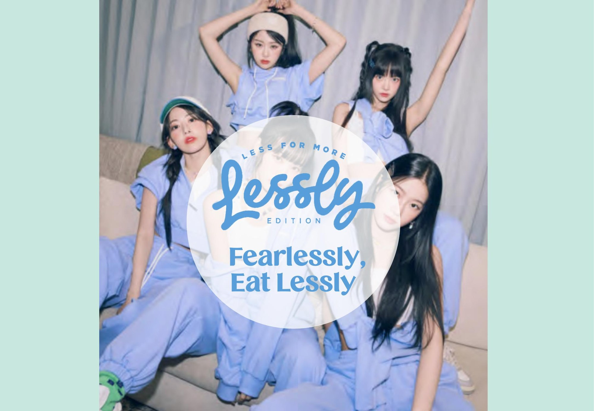
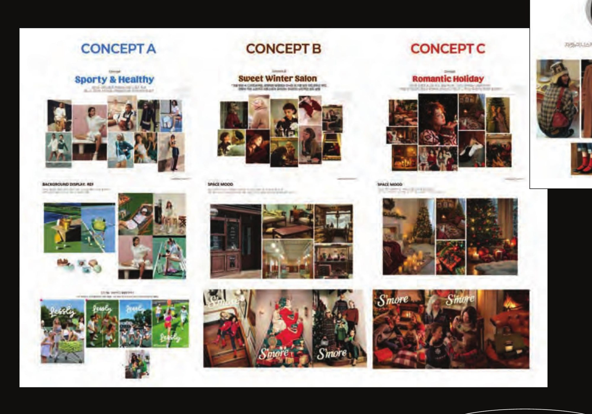

LE SSERAFIM × Baskin-Robbins
Casting as strategy — an artist chosen for what her work already means, not for how far it reaches.

- Client
- Baskin-Robbins Korea
- Location
- Seoul, Korea
- Year
- 2025
- Role
- Creative Marketing Team Lead
- Scope
- Campaign concept, artist narrative strategy, concept boards, styling direction, photography art direction
Most celebrity campaigns buy reach. This one started from meaning. LE SSERAFIM’s catalogue is built on a single claim — that you are already enough — and Korea in 2025 was a market full of people who needed to hear it: a downgraded growth forecast, tariffs in the headlines, and a generation being careful with money and with itself.
So the campaign wasn’t an endorsement laid over a product. The artist’s own line became the brand’s line, turned outward: I’m good enough to you’re good enough. Ice cream as a small, affordable, unembarrassed piece of self-regard.
Two executions ran from it. The Christmas cake and ice cream campaign was built as three distinct concept directions — Sporty & Healthy, Sweet Winter Salon, Romantic Holiday — and taken through member-by-member styling, wardrobe and set to the shoot itself. The low-sugar line launched under Fearlessly, Eat Lessly, a line that borrows the artist’s own word and collides it with the product’s reason for existing.
The work here is the part that usually goes unseen: deciding which artist a brand should stand next to, and why.
Campaign art direction and concept development by Ahran Won. Artist imagery © Baskin-Robbins Korea and the respective rights holders.






